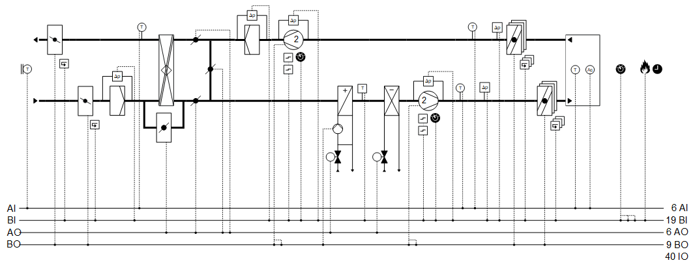
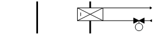
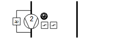
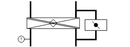
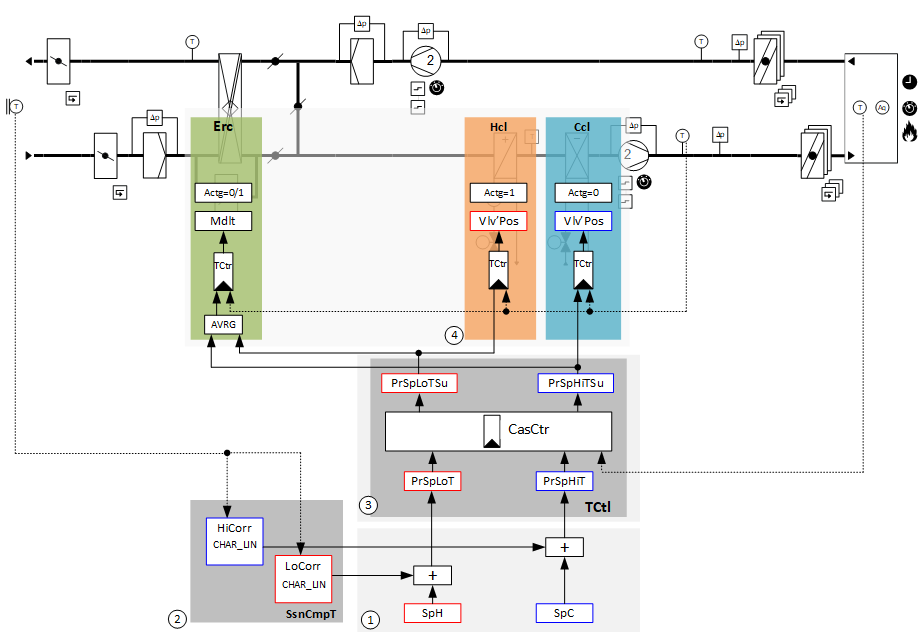
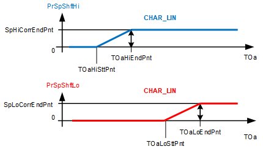
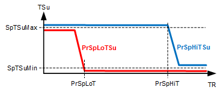
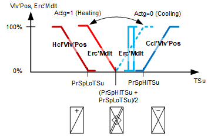
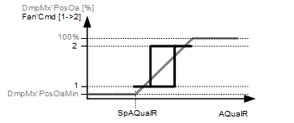

[Ahu22] Air handling unit, temperature cascade control, with 2-speed fans, mixed air dampers for air quality control
Plant example Ahu22 has 2-stage fans, chilled water cooling coil, hot water heating coil, energy recovery with a plate heat exchanger, mixed air dampers, shutoff dampers and fire dampers.
Functions
- Temperature control with room/supply air temperature cascade control
- Air quality control by modulating the outside air portion and stage switching of the fans
- Night cooling
- Sustained mode room temperature
Plant diagram

Components
- Fan, 2-stage
- Shutoff dampers and fire dampers
- Energy recovery with plate heat exchanger
- Mixed air damper
- Hot water heating coil
- Chilled water cooling coil
Components and functions
Components and functions of the plant example:
Component | Function | BACnet object |
|---|---|---|
| Fire detection contact Switches the plant to: Off | [BI] Fire detection contact |
Operating mode switch Switches the plant to: Auto | Off | Speed 1, Speed 2 | [MI] Operating mode switch | |
| Manual operating mode selection Switches the plant to: Auto | Off | Speed 1, Speed 2 | [MCnfVal] Manual operating mode selection |
Scheduler program Switches the plant to: Off | On | Speed 1, Speed 2 | [MSchedule] Scheduler | |
| Present operating mode Reports the present operating mode: Off | On | [MCalcVal] Present operating mode |
| Reason for present operating mode Reports the reason for the present operating mode: Exception | Operating mode switch | Manual operating mode selection | Room temperature sustained mode | Night setback | Scheduler | Switching action operating | [MCalcVal] Reason for present operating mode |
| Temperature control basic setpoints (1) Setpoints for upper and lower room temperature See function diagram for temperature control basic setpoints (1). | [ACnfVal] Setpoint for cooling [ACnfVal] Setpoint for heating |
| Seasonal temperature compensation (2) Corrects the high and low room temperature setpoint per the outside temperature. See function diagram for seasonal temperature compensation. | [BCalcVal] Seasonal temperature compensation |
| Temperature cascade control (3) (Room/supply air temperature cascade) Calculates the high and low supply air setpoint per the outside temperature. See function diagram for temperature cascade control. |
> [ACalcVal] Present setpoint high for room temperature > [ACalcVal] Present setpoint low for room temperature > [ACalcVal] Present setpoint high for supply air temperature > [ACalcVal] Present setpoint low for supply air temperature > [ACnfVal] Gain > [ICnfVal] Integral action time Tn > [ACnfVal] Minimum supply air temperature setpoint > [ACnfVal] Maximum supply air temperature setpoint |
| Night cooling Switches on the fans, if the conditions are met to cool the room air (outside the operating mode On). | [BSchedule] Scheduler > [ACnfVal] Outside air temperature low limit > [ACnfVal] Switch-on via temperature difference |
| Air quality control |
|
| Controls deteriorating room air quality by:
| [ACnfVal] Setpoint for room air quality > [Controller] Air quality controller |
Room temperature sensor Measures room temperature. Sustained mode: Switches on the plant when the setpoint is breeched. | [AI] Room temperature > [ACnfVal] Room temperature setpoint sustained mode | |
Room air quality sensor Measures the room air quality. | [AI] Room air quality | |
Supply air fire dampers Opens and closes the fire damper group in the supply air. Monitors the position open. Adjustable damper runtime in the program. |
> [BO] Command > [BI] Feedback open > [BCalcVal] Position monitoring | |
Extract air fire dampers Opens and closes the fire damper group in the extract air. Monitors the position open. Adjustable damper runtime in the program. |
> [BO] Command > [BI] Feedback open > [BCalcVal] Position monitoring | |
Extract air maximum pressure monitor At too high a pressure, switches the plant to: Off | (Located in | |
Supply air maximum pressure monitor At too high a pressure, switches the plant to: Off | (Located in | |
| Extract air temperature sensor Measures extract air temperature. | > [AI] Extract air temperature |
Supply air temperature sensor Measures the supply air temperature. | > [AI] Supply air temperature | |
Supply air fan |
| |
Monitor differential pressure The plant is switched to Off if the differential pressure does not build after switching on the fan. | > [BI] Differential pressure monitor | |
Command Switches the fan as needed to Off, Stage 1, and Stage 2. | > [MO] Command | |
Maintenance switch Switches off the fan and the plant. The fan outputs are blocked locally at a high priority (Prio 2). | > [BI] Maintenance switch | |
Fault message Reports faults. Switches off the fan and plant. | > [BI] Fault | |
 | Cooling coil |
|
Reports chilled water demand to cooling distribution. | > [BCalcVal] Chilled water demand | |
Valve |
| |
Temperature controller Controls the supply air temperature. See function diagram for supply air temperature control. | > [Controller] Temperature controller | |
Valve position Controls the valve position: 0...100 [%] | > [AO] Position | |
| Heating coil
|
|
Reports hot water demand to heat distribution. | > [BCalcVal] Hot water demand | |
Frost protection Prevents the hot water heating coil from freezing. If the frost protection monitor triggers:
| > [BI] Frost protection monitor | |
Purge optimization Purges the heating coil with hot water at cold outside temperature prior to switching on fans. Duration and valve opening are optimized using function [PURGE] Purge optimization. | > [BCalcVal] Startup purge active | |
Pump |
| |
Pump command Switches on/off the pump as needed. | > [BO] Command | |
Pump run when the outside air temperature is low: Pump always operates at low outside temperatures (frost protection). |
| |
Kick function (pump kick) Prevents the pump from seizing during long idle periods. |
| |
Valve |
| |
Temperature controller Controls the supply air temperature. See function diagram for supply air temperature control. | > [Controller] Temperature controller | |
Valve position Controls the valve position: 0...100 [%] | > [AO] Position | |
 | Extract air fan |
|
Monitor differential pressure The plant is switched to off if the differential pressure does not build after switching on the fan. | > [BI] Differential pressure monitor | |
Command Switches the fan as needed to Off, Stage 1, and Stage 2. | > [MO] Command | |
Maintenance switch Switches off the fan and the plant. The fan outputs are blocked locally at a high priority (Prio 2). | > [BI] Maintenance switch | |
Fault message Reports faults. Switches off the fan and plant. | > [BI] Fault | |
| Extract air filter |
|
Monitors the differential pressure through the extract air filter and reports a dirty filter. | > [BI] Filter detector | |
Mixed air damper Modulates the dampers to control air quality. |
> [AO] Position for outside air > [AO] Position for recirculated air > [AO] Position for exhaust air | |
Minimum outside air portion Ensures that a minimum outside air portion is available. | > [ACnfVal] Minimum position for outside air | |
Ramp-up of plant at low outside air temperatures The mixed air dampers support plant ramp-up after purge optimization at low outside temperatures by moving to recirculation (with the minimum outside air portion) for a short period. Control then assumes air quality. | ||
 | Energy recovery (Plate heat exchanger) Reuses sensible energy from extract air for supply air by transferring heat. Changeover heating/cooling: Determines whether it can be heated or cooled using extract air:
|
|
Temperature controller Controls the supply air temperature. The supply air setpoint is the result of the average of the high setpoint for supply air temperature and the low setpoint for supply air temperature. See function diagram for supply air temperature control. | > [Controller] Temperature controller | |
Modulating control Modulates power of energy recovery: 0...100 [%] | > [AO] Modulating | |
Icing protection The temperature sensor measures the exhaust air temperature after energy recovery. The anti-icing protection controller holds the exhaust air temperature sufficiently high by lowering the power. It prevents freezing of any condensation and icing on the exchanger surface. | > [AI] Exhaust air temperature after energy recovery > [Controller] Anti-icing protection controller | |
| Outside air filter |
|
Monitors the differential pressure through the extract air filter and reports a dirty filter. | > [BI] Filter detector | |
| Outside air damper |
|
Command Opens and closes the outside air damper. Monitors the position open. Adjustable damper runtime in the program. | > [BO] Command > [BI] Feedback open > [BCalcVal] Position monitoring | |
| Exhaust air damper |
|
Command Opens and closes the exhaust air damper. Monitors the position open. Adjustable damper runtime in the program. | > [BO] Command > [BI] Feedback open > [BCalcVal] Position monitoring | |
| Outside temperature sensor Measures outside temperature. | > [AI] Outside air temperature |


Functions and diagrams
Overview
Room/supply air temperature cascade control with seasonal temperature compensation:

Mdlt | Modulating | TCtr | Temperature controller |
1 | Basic setpoints for temperature control | SpH | Setpoint for heating |
SpC | Setpoint for cooling | 2 | Seasonal temperature compensation |
HiCorr | High correction value | LoCorr | Low correction value |
3 | Temperature cascade control | PrSpLoTSu | Present setpoint low for supply air temperature |
PrSpHiTSu | Present setpoint high for supply air temperature | PrSpLoT | Present setpoint low for room temperature |
PrSpHiT | Present setpoint high for room temperature | 4 | Supply air temperature control |
VlvPos | Valve position |
Plant example Ahu22 is used as room/supply air temperature cascade control.
Ahu22 can be adapted to the following applications with just a few modifications:
- Extract air/supply air temperature cascade control
- Pure supply air temperature control
- Pure room temperature control
Temperature control basic setpoints (1)
Basic setpoints, that, for example, are operated by the operator:
BACnet objects
Name | Description | Object type | Default value |
|---|---|---|---|
|
SpC | Setpoint for cooling | ACnfVal | 24 [°C] |
|
SpH | Setpoint for heating | ACnfVal | 21 [°C] |
This plant example deals with basic setpoints for temperature control of the room temperature setpoints.
Seasonal temperature compensation (2)
Seasonal temperature compensation corrects the high and low room temperature setpoint per the outside temperature.
The correction begins on the outside temperature start point [TOa...SttPnt] and ends with the outside temperature end point [TOa...EndPnt]. [Sp...CorrEndPnt] determines the height of the correction.

PrSpShftHi | Output of the function seasonal temperature compensation | CHAR_LIN | Function block |
SpHiCorrEndPnt | High correction value at the outside air end point | TOaHiEndPnt | Outside air temperature high for end point |
TOa | Outside air temperature | TOaHiSttPnt | Outside air temperature high for start point |
PrSpShftLo | Output of the function seasonal temperature compensation | SpLoCorrEndPnt | Low correction value at the outside air end point |
TOaLoEndPnt | Outside temperature up to which the temperature compensation increases the low setpoint. | TOaLoSttPnt | Outside temperature at which the temperature compensation increases the low setpoint. |
BACnet objects
Name | Description | Object type | Default value |
|---|---|---|---|
|
SsnCmpT | Seasonal temperature compensation The seasonal temperature compensation is active if a correction is not equal to zero. | BCalcVal | Inactive |
Set values on function block CHAR_LIN
Name | Description | Default value |
|---|---|---|
|
TOaHiSttPnt | Outside air temperature high for start point (X1 on CHAR_LIN) Outside temperature at which the temperature compensation increases the high setpoint. | 26 [°C] |
|
TOaHiEndPnt | Outside air temperature high for end point (X2 on CHAR_LIN) Outside temperature up to which the temperature compensation increases the high setpoint. | 32 [°C] |
SpHiCorrEndPnt | High correction value at the outside temperature end point = > Height of the correction (Y2 on CHAR_LIN) | 3 [K] |
|
TOaLoSttPnt | Outside air temperature low for start point (X1 on CHAR_LIN) Outside temperature at which the temperature compensation increases the low setpoint. | 26 [°C] |
|
TOaLoEndPnt | Outside air temperature low for end point (X2 on CHAR_LIN) Outside temperature up to which the temperature compensation increases the low setpoint. | 32 [°C] |
SpLoCorrEndPnt | Low correction value at the outside temperature end point = > Height of the correction (Y2 on CHAR_LIN) | 1 [K] |
Combination of basic setpoints (1) and seasonal temperature compensation (2)

SpTR | Room temperature setpoint or extract air temperature setpoint | PrSpHiT | Present setpoint high for room temperature |
PrSpShftHi | Output of the function seasonal temperature compensation | PrSpLoT | Present setpoint low for room temperature |
PrSpShftLo | Output of the function seasonal temperature compensation | TOa | Outside air temperature |
BACnet objects
Name | Description | Object type | Default value |
|---|---|---|---|
|
PrSpHiT | Present setpoint high for room temperature The present setpoint high room temperature or extract air setpoint for cooling operation as corrected by the seasonal temperature compensation | ACalcVal | 23 [°C] |
|
PrSpLoT | Present setpoint low for room temperature The present setpoint low room temperature or extract air setpoint for heating operation as corrected by the seasonal temperature compensation | ACalcVal | 22 [°C] |
The comfort area for the room is defined using the two basic setpoints for the room or extract air temperature; both of which are compensated to account for outside temperature.
Temperature cascade control (3)
Temperature cascade control of the room supply air calculates the high and low supply air temperature setpoint as per the room temperature.
Function block [CAS_CTR] Cascade controller calculates the following setpoints:
- [PrSpHiTSu] Present setpoint high for supply air temperature
- [PrSpLoTSu] Present setpoint low for supply air temperature
The supply air setpoints [PrSpLoTSu] and [PrSpHiTSu] are limited on the low side by the minimum supply air temperature setpoint [SpTSuMin] and by the maximum supply air temperature setpoint [SpTSuMax] on the high side.
If the room or extract air temperature [TR] exceeds the present setpoint high for the room temperature [PrSpHiT], the present setpoint high for supply air [PrSpHiTSu] is continuously reduced until the minimum setpoint low for supply air [SpTSuMin] is reached.
If the room or extract air temperature [TR] drops below the present setpoint low for room temperature [PrSpLoT], the present setpoint low for supply air [PrSpLoTSu] is continuously increased until the maximum setpoint for supply air [SpTSuMax] is reached.
Setpoints are forwarded to the components responsible for supply air temperature control (4).
The setpoint for energy recovery with rotary heat exchanger is calculated using the average of [PrSpHiTSu] and [PrSpLoTSu].

TSu | Supply air temperature | SpTSuMax | Maximum supply air temperature setpoint |
PrSpLoTSu | Present setpoint low for supply air temperature | PrSpHiTSu | Present setpoint high for supply air temperature |
SpTSuMin | Minimum supply air temperature setpoint | PrSpLoT | Present setpoint low for room temperature |
PrSpHiT | Present setpoint high for room temperature | TR | Room temperature |
BACnet objects
Name | Description | Object type | Default value |
|---|---|---|---|
|
PrSpHiT | Present setpoint high for room temperature The present setpoint high room temperature or extract air setpoint for cooling operation as corrected by the seasonal temperature compensation | ACalcVal | 23 [°C] |
|
PrSpLoT | Present setpoint low for room temperature The present setpoint low room temperature or extract air setpoint for heating operation as corrected by the seasonal temperature compensation | ACalcVal | 22 [°C] |
|
PrSpHiTSu | Present setpoint high for supply air temperature Calculated supply air setpoint for cooling | ACalcVal | 18 [°C] |
|
PrSpLoTSu | Present setpoint low for supply air temperature Calculated supply air setpoint for heating | ACalcVal | 18 [°C] |
|
SpTSuMax | Maximum supply air temperature setpoint Limits supply air on the high side. | ACnfVal | 32 [°C] |
|
SpTSuMin | Minimum supply air temperature setpoint Limits supply air on the low side. | ACnfVal | 15 [°C] |
|
Gain | Gain Gain factor for the cascade controller | ACnfVal | 3 [K/K] |
|
Tn | Integral action time Tn Integral action time for the cascade controller | ICnfVal | 1200 [s] |
Supply air temperature control (4)

Vlv'Pos, Erc'Pos | Positions | Actg=1 | Control action for the plate heat exchanger is heating. |
Actg=0 | Control action for the plate heat exchanger is cooling. | Hcl'Vlv'Pos | Heating coil valve position |
Erc'Mdlt | Modulation of energy recovery with plate heat exchanger | Ccl'Vlv'Pos | Cooling coil valve position |
PrSpLoTSu | Present setpoint low for supply air temperature | PrSpHiTSu | Present setpoint high for supply air temperature |
TSu | Supply air temperature |
BACnet objects
Name | Description | Object type | Default value |
|---|---|---|---|
Hcl'Vlv'TCtr | Temperature controller for heating coil Controls the supply air temperature. | Controller | N/A |
The temperature controller acts as a PI controller (PID with derivative action time Tv=0) and compares the temperature setpoint [SpTSu] against the supply air temperature [TSu] and calculates the valve position [Hcl'Vlv'Pos] on the output. The following controller variables are preset: The controller is locked in the following cases: | |||
Erc'TCtr | Temperature controller for energy recovery Controls the supply air temperature. | Controller | N/A |
Conditions for heating are fulfilled: The following controller variables are preset: Conditions for cooling are fulfilled: The following controller variables are preset: Behavior at plant startup: Ramp-up at low outside temperature and if purge optimization [PURGE] occurred: Ramp-up if no purge optimization [PURGE] occurred: | |||
Ccl'TCtr | Temperature controller for cooling coil Controls the supply air temperature. | Controller | N/A |
The temperature controller acts as a PI controller (PID with derivative action time Tv=0) and compares the temperature setpoint [PrSpHiTSu] against the supply air temperature [TSu] and calculates the valve position [Ccl'Vlv'Pos] on the output. The following controller variables are preset: The controller is locked in the following cases: | |||
Icing protection on energy recovery with plate heat exchanger
Holds the exhaust air temperature sufficiently high by lowering the power.
Prevents freezing of any condensation and thus icing on the exchanger surface.
BACnet objects
Name | Description | Object type | Default value |
|---|---|---|---|
Erc'lcPrtCtr | Anti-icing protection controller Prevents icing on the exchanger surface. | Controller | N/A |
The anti-icing protection controller acts as a PI controller (PID with derivative action time Tv=0) and compares the temperature setpoint set on input [Sp] against the exhaust air temperature after energy recovery [TEhAfErc] and calculates value [YCtrMax] on the output on BACnet object Erc'TCtr (temperature controller for energy recovery). The following controller variables are preset: | |||
Air quality control
Controls room air quality using mixed air dampers and fan stages.

DmpMx'PosOa | Mixed air damper, Position for outside air | Fan'Cmd [1→2] | Fan, Command, Changeover Stage 1 to Stage 2 |
DmpMx'PosOaMin | Mixed air damper, Minimum position for outside air | SpAQualR | Setpoint for room air quality |
AQualR | Room air quality |
BACnet objects
Name | Description | Object type | Default value |
|---|---|---|---|
AQualCtl'AQualCtr | Air quality controller for air quality control Controls room air quality. | Controller | N/A |
The air quality controller acts as a PI controller (PID with derivative action time Tv=0) and compares the room air quality setpoint [SpAQualR] against the room air quality [AQualR] and calculates the position for outside air [DmpMx'PosOa] on the output. The following controller variables are preset: | |||
Stage switching [1→2→1]:
It switches from Stage 1 to Stage 2 if the output of the air quality controller exceeds a value, e.g. 80%. It is switched to Stage 1 if the controller output declines and slightly exceeds, e.g. by 5%, the set value for the minimum position for outside air.
Plant operating modes and control sequence
Plant operating modes:
- Off (1)
- On (2)
The operating modes are reported on [MCalcVal] object 'Present operating mode'.
At the same time, the reason for the present operating mode is reported to another [MCalcVal] object:
- Exception (1)
- Operating mode switch (2), resulting from an active (not equal to Auto) operating mode switch
- Manual operating mode selection (3), resulting from an active (not equal to Auto) manual operating mode selection
- Room temperature sustained mode (4)
- Night cooling (5)
- Scheduler (6), resulting from an active scheduler
- Switching action is performed (7) and is the result of a transition state on the plant, e.g. longer switch-off due to a delay to dry out the cooler.
The components for control are connected to function block CMDSEQ_B and are also acquired by this function block. See table below.
There is a normal mode and exception mode.
Normal operation
Sources for normal mode:
- [MI] Operating mode switch
- [MCnfVal] Manual operating mode selection
- Logic for room temperature sustained mode
- [MSchedule] Scheduler
- [BSchedule] Night cooling scheduler
In normal mode, the components are controlled at priority 15 per the operating mode, sequence, and function in function block CMDSEQ_B. The set timeouts and/or delays are considered.
Exception mode
Sources for exception mode:
- Fire detection contact
- Smoke detector
- Faults in the components, e.g. fault contact, frost protection monitor, maintenance switch
- Faulty monitoring signals, e.g. fire dampers not open, differential pressure and positive pressure monitoring
In exception mode, all outputs are switched off directly at priority 5 and the present operating mode is set to 'Off'. This is reported to function block CMDSEQ_B on input [RpdOff] and the components are switched off immediately as of the function block at priority 15.
The set timeouts and/or delays are not considered.
Special case frost protection:
In this case, outputs [AO] valve position and [BO] pump command are switched on by the heating coil at priority 4.
Special case maintenance switch:
In this case, outputs [AO] speed and [BO] command are switched off by the fans at priority 2.
Components, sequence, and function in CMDSEQ_B
Plant operating mode | Component | ||||||
|---|---|---|---|---|---|---|---|
| Hcl | DmpOa + FdpsSu | DmpEh + FdpsEx | Erc + DmpMx | FanSu | FanEh | Ccl |
Off | Off | Off | Off | Off | Off | Off | Off |
On | On | On | On | On | On | On | On |
| |||||||
Sequences | |||||||
Start sequence | 1 | 2 | 2 | 3 | 3 | 3 | 3 |
Start function | Feedback or timeout | AND (Group with next aggregate) | Feedback | AND (Group with next aggregate) | AND (Group with next aggregate) | AND (Group with next aggregate) | AND (Group with next aggregate) |
Start delay | 5m | - | - | - | - | - | - |
| |||||||
Stop sequence | 3 | 3 | 3 | 2 | 2 | 2 | 1 |
Stop function | AND (Group with next aggregate) | AND (Group with next aggregate) | AND (Group with next aggregate) | Delay | AND (Group with next aggregate) | AND (Group with next aggregate) | Feedback or timeout |
Stop delay | - | - | - | 1m | - | - | 5m |
Start sequence
- The heating coil switches on.
It is further switched if an operating message from the heating coil arrives on the input pin of CMDSEQ_B or, at the latest after 5 minutes (function Feedback or timeout - ). The ramp-up purge generates the operating message.
- The shutoff dampers switch on at the same time (function AND).
- In this plant example, the shutoff dampers have an end switch. It is still switched if the message open is on both dampers.
- The fans, energy recovery, and mixed air dampers and cooling coils switch on at the same time (function AND, Group with next aggregate).
Stop sequence
- The cooling coil switches off.
It is further switched if an operating message (Off) from the cooling coil arrives on the input pin for CMDSEQ_B or, at the latest after 5 minutes (function Feedback or timeout).
When switching off the corresponding components (cooling coil), the operating message (On) is maintained up to 5 minutes It can dry out if it was operating. If it is not operating, its operating message is immediately set to Off without a delay to the stop sequence - The fans, energy recovery, mixed air dampers, and reheater switch off at the same time (function AND, Group with next aggregate). It waits for 1 minute (function Delay).
- The shutoff dampers and fire dampers close and the reheater switches off (function AND, Group with next aggregate).
Start-up control and alarm handling
Start-up control (nested chart SttUpAlmHdl)
The following functionality is available for an automatic startup of the plant, e.g. after a loss of power and return of power:
- Fixed switch-on delay (can be set on input pin [DlySttUp])
- The plant remains off to ensure communications are reliable and cross-check references are triggered. 'Exception' is reported as the reason for the present operating mode.
- Automatic acknowledge (2x) of possible pending alarms during a fixed switch-on delay.
- Additional adjustable delay for staged plant ramp-up (can be set on input pin [DlyOn])
Alarm handling (nested chart SttUpAlmHdl)
The state of events on the plant is acquired by BACnet object 'Plant state'. The state is mapped on function block [CMN_EVT] Common event.
The following functions are available:
- Automatic acknowledge (2x) after startup
- Alarm acknowledgement with a value object
- Alarm indication:
- For pending alarms On
- For unprocessed alarms flashing - Ability to connect the acknowledge button [BI]
- Ability to connect to an alarm indication [BO], e.g. an alarm lamp through an output block [BO]
- Ability to connect to other alarm handling functions on other plants, e.g. acknowledge button and alarm indication for multiple plants in the same control cabinet
I/O data points
Name | Description | Type | Signal/connection | State text | Engineering unit |
|---|---|---|---|---|---|
FireDetCont | Fire detection contact Alarm function: Extended (Notification class 7) Reference value: Tripped Time deviation: 0 [s] | BI | Contact NC | Normal | Tripped | N/A |
OpModSwi | Operating mode switch | MI | N/A | Auto | Off | Stage 1 | Stage 2 | N/A |
TR | Room temperature | AI | LG-Ni1000 | N/A | 0...50 [°C] |
AQualR | Room air quality | AI | 0...10 [V] | N/A | 0...2000 [ppm] |
Fdp’Ex‘Cmd | Extract air fire dampers command | BO | Contact NO | Close | Open | N/A |
Fdp'Ex'FbOpnd | Extract air fire damper feedback open | BI | Contact NO | Closed | Opened | N/A |
Fdp'Su'Cmd | Supply air fire damper command | BO | Contact NO | Close | Open | N/A |
Fdp'Su'FbOpnd | Supply air fire damper feedback open | BI | Contact NO | Closed | Opened | N/A |
FanEx'PMaxMon | Extract air fan maximum pressure monitor Alarm function: Extended (Notification class 7) Reference value: Triggered Time deviation: 10 [s] | BI | Contact NO | Normal | Tripped | N/A |
FanSu'PMaxMon | Supply air fan maximum pressure monitor Alarm function: Extended (Notification class 7) Reference value: Triggered Time deviation: 10 [s] | BI | Contact NO | Normal | Tripped | N/A |
TEx | Extract air temperature | AI | LG-Ni1000 | N/A | 0...50 [°C] |
TSu | Supply air temperature | AI | LG-Ni1000 | N/A | 0...50 [°C] |
FanSu'Cmd | Supply air fan'Command | MO | Contact NO | Off | Stage 1 | Stage 2 | N/A |
FanSu'MntnSwi | Supply air fan'Maintenance switch Alarm function: Basic (Notification class 8) Reference value: Maintenance Time deviation: 0 [s] | BI | Contact NO | Normal | Maintenance | N/A |
FanSu'Flt | Supply air fan fault Alarm function: Basic (Notification class 8) Reference value: Tripped Time deviation: 0 [s] | BI | Contact NO | Normal | Tripped | N/A |
Fa'Su'DiffPMon | Supply air fan differential pressure monitor Alarm function: Extended (Notification class 7) Reference value: Dynamically switched Time deviation: 30 [s] | BI | Contact NO | Off | On | N/A |
Ccl'Vlv'Pos | Cooling coil valve position | AO | 0...10 [V] | N/A | 0...1000 [%] |
Hcl'Vlv'Pos | Heating coil fan position | AO | 0...10 [V] | N/A | 0...100 [%] |
Hcl'Pu'Cmd | Heating coil pump command | BO | Contact NO | Off | On | N/A |
Hcl'FrPrtMon | Frost protection monitor Alarm function: Extended (Notification class 7) Reference value: Tripped Time deviation: 0 [s] | BI | Contact NC | Normal | Tripped | N/A |
FanEx'Cmd | Extract air fan command | MO | Contact NO | Off | Stage 1 | Stage 2 | N/A |
FanEx'MntnSwi | Extract air fan maintenance switch Alarm function: Basic (Notification class 8) Reference value: Maintenance Time deviation: 0 [s] | BI | Contact NO | Normal | Maintenance | N/A |
FanEx'Flt | Extract air fan fault Alarm function: Basic (Notification class 8) Reference value: Triggered Time deviation: 0 [s] | BI | Contact NO | Normal | Tripped | N/A |
FanEx'DiffPMon | Extract air fan differential pressure monitor Alarm function: Extended (Notification class 7) Reference value: Dynamically switched Time deviation: 30 [s] | BI | Contact NO | Off | On | N/A |
FilEx'FilDet | Extract air filter detector | BI | Contact NO | Normal | Tripped | N/A |
DmpMx'PosOa | Mixed air damper position for outside air | AO | 0...10 [V] | N/A | 0...100 [%] |
DmpMx'PosRc | Mixed air damper position for mixed air | AO | 0...10 [V] | N/A | 0...100 [%] |
DmpMx'PosEh | Mixed air damper position for exhaust air | AO | 0...10 [V] | N/A | 0...100 [%] |
Erc'Mdlt | Energy recovery modulating control | AO | 0...10 [V] | N/A | 0...100 [%] |
Erc'TEhAfErc | Energy recovery exhaust air temperature after heat exchanger | AI | LG-Ni1000 | N/A | 0...50 [°C] |
DmpOa'Cmd | Outside air damper command | BO | Contact NO | Close | Open | N/A |
DmpOa'FbOpnd | Outside air damper feedback open | BI | Contact NO | Closed | Opened | N/A |
DmpEh'Cmd | Exhaust air damper command | BO | Contact NO | Close | Open | N/A |
DmpEh'FbOpnd | Exhaust air damper feedback open | BI | Contact NO | Closed | Opened | N/A |
FilOa'FilDet | Outside air filter detector | BI | Contact NO | Normal | Tripped | N/A |
TOa | Outside temperature | AI | LG-Ni1000 | N/A | -70...70 [°C] |